- Objetivos
- Definicion de Paradigma. (Evolución de Concepto)
- Análisis de los Paradigmas Mediante Ejemplos Reales
- Paradigmas Sociales.
- Paradigmas en la Educación.
- Paradigmas Laborales.
- Paradigmas Tecnológicos.
- Paradigmas en Ingeniería.
- Paradigmas en el Desarrollo de una Empresa.
- Paradigmas en Empresas.
Contenido
Contenido
Objetivos
Objetivos
- Entender plenamente el concepto de paradigma.
- Identificar paradigmas en diferentes ámbitos de nuestra vida diaria.
- Analizar en qué casos es conveniente romper paradigmas.
- Incentivar al auditorio a profundizar el tema.
Definiciones
Definiciones
- Etimología: (Griego) Prefijo “para”, que significa junto, y “deigma” que se traduce como ejemplo o modelo.
- Inicios: Ejemplo o modelo seguir.
- Thomas Kuhn: Paradigma Científico, Interrogantes -> Objetivo. Cambio de paradigma -> Nuevos conocimientos. (Dramático)
- Paradigma en Ciencias Sociales: Cosmovisión. Creencias, vivencias y valores. -> Comportamiento Social.
Analisis de Paradigmas mediante ejemplos
Analisis de Paradigmas mediante ejemplos
Paradigmas Sociales
Paradigmas Sociales
Paradigmas en la Educación
Paradigmas en la Educación
- Paradigma Conductista
- Paradigma Cognitivo
- Paradigma Histórico Social
- Paradigma Constructivista
Paradigma Conductista
Paradigma Conductista
El aprendizaje únicamente ocurre cuando se observa un cambio en el comportamiento, si no hay cambio observable no hay aprendizaje.
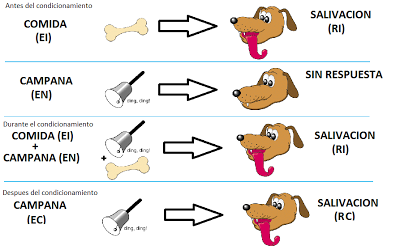
El mayor legado del conductismo consiste en sus aportaciones científicas sobre el comportamiento humano.
Paradigma Cognitivo
Paradigma Cognitivo
Considera que cada individuo tendrá diferentes representaciones del mundo.
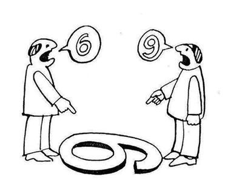
Aprender constituye la síntesis de la forma y contenido recibido por las percepciones, las cuales actúan en forma relativa y personal en cada individuo.
Paradigma Histórico Social
Paradigma Histórico Social
Explica que el individuo aunque importante no es la única variable en el aprendizaje, su historia personal, su clase social, sus oportunidades sociales, su época histórica, etc. son variables que no solo apoyan el aprendizaje sino que son parte integral de él.
Paradigma Constructivista
Paradigma Constructivista
El aprendizaje no es un sencillo asunto de transmisión y acumulación de conocimientos, sino es un proceso ACTIVO.

Por lo tanto construye conocimientos partiendo de su experiencia e integrándola con la información que recibe.
Paradigmas Tecnologicos
Paradigmas Tecnologicos
El concepto de paradigma tecnológico intenta captar un conjunto de reglas o principios que guían a las decisiones tecnológicas y de inversión en un período de tiempo determinado. A largo plazo, cada paradigma es sustituido por uno nuevo, lo que produce enormes cambios en la organización social y las relaciones económicas.
Como señalan Lastres y Albagli (INFORMAÇÃO E GLOBALIZAÇÃO NA ERA DO CONHECIMENTO PAG 32) existen tres elementos que caracterizan el desarrollo de un nuevo paradigma:
- Amplias posibilidades de aplicación de nuevas tecnologías
- Demanda creciente
- Disminución creciente del costo unitario de producción
Se consideran 5 periodos, cada uno caracterizado por un paradigma diferente:
- Entre 1770 y 1840, insumos claves: algodon y hierro fundido; auge textil, fundición y laminacion de metales ferrosos.
- Hasta a 1890, dominio de maquinas a vapor y ferrocarril
- Hasta la depresión de 1929. Dominio de la energia eléctrica; factor clave: aceros; ingenieria.
- hasta mediados de 70s, aceros, complejos automotor y petroquimica.
- Hasta la actualidad, paradigma dominado por las tecnologias de la información. Microelectronica, Informática, telecomunicaciones, robotica, sofware.
El cambio de paradigma en tecnologia se caracteriza por los siguiente proceso.1
- Aparecen sectores inexistentes previamente.
- Se desarrollan nuevas tecnologías de proceso y de producto.
- Se desarrollan nuevas formas de generar y de transmitir conocimientos.
- Emergen nuevas formas de comercialización.
- Se producen cambios radicales en la organización de las empresas y las instituciones públicas y privadas.
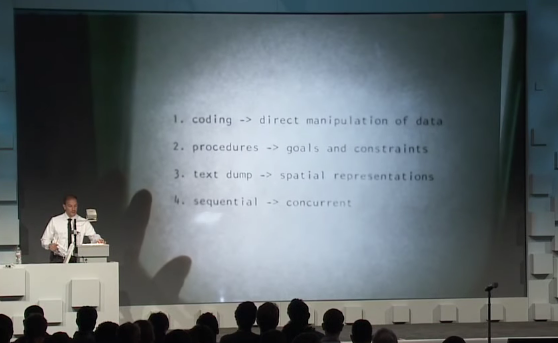
Paradigmas en Ingeniería
Paradigmas en Ingeniería
La Ingeniería es una carrea profesional principalmente para hombres.
La Ingeniería es una carrea profesional principalmente para hombres.

Un Ingeniero Mecánico debe saber arreglar todo tipo de carros.
Un Ingeniero Mecánico debe saber arreglar todo tipo de carros.
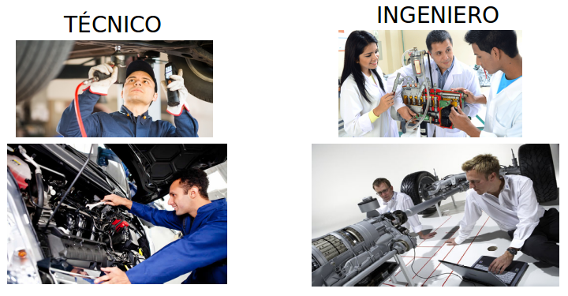
El diseño y los ensayos deben estar basados en normas específicas para cada área de trabajo.
El diseño y los ensayos deben estar basados en normas específicas para cada área de trabajo.
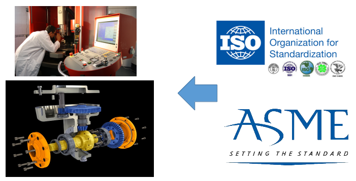
Es mejor basarse en modelos pre-establecidos que innovar en alguna rama de la Ingenieria
Es mejor basarse en modelos pre-establecidos que innovar en alguna rama de la Ingenieria
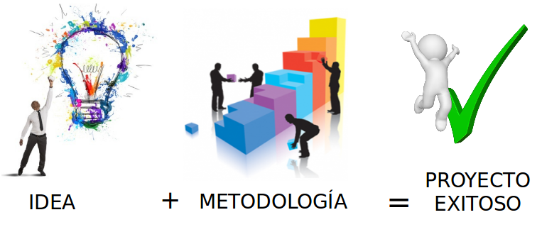
Un Ingeniero de la UNI no es apto para asumir cargos genereciales en una empresa
Un Ingeniero de la UNI no es apto para asumir cargos genereciales en una empresa
EL uso de sofware de Ingeniería debe ser limitado, ya que nos vuelve dependientes de una máquina.
EL uso de sofware de Ingeniería debe ser limitado, ya que nos vuelve dependientes de una máquina.
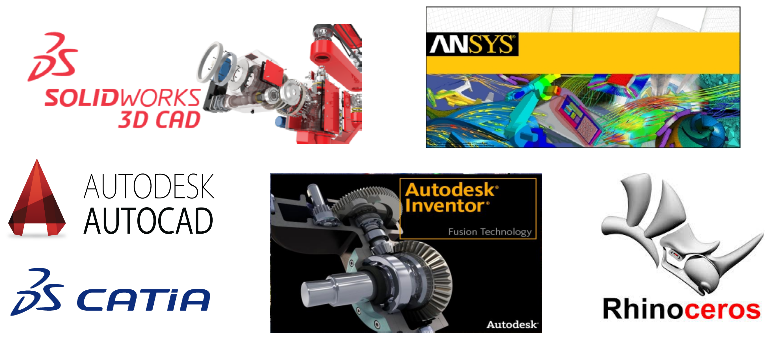
Paradigmas en el desarrollo Empresarial
Paradigmas en el desarrollo Empresarial
Emprendimiento!
Emprendimiento!
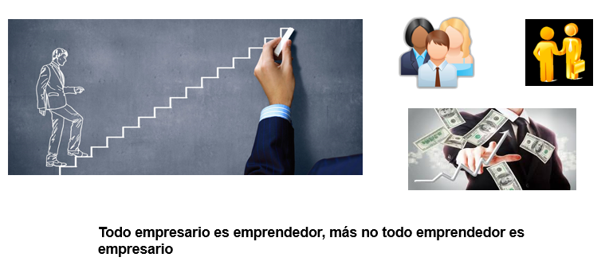
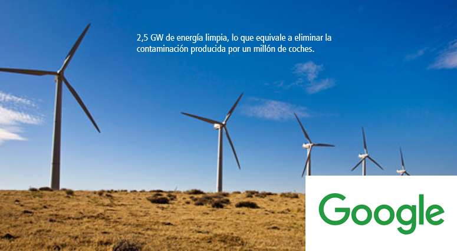
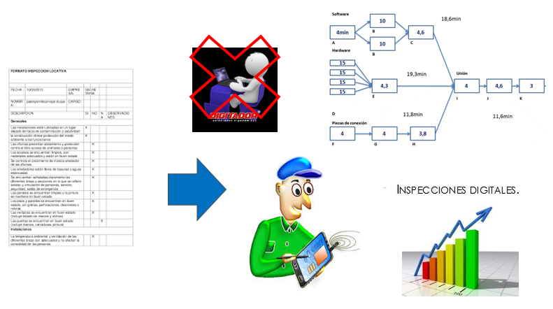
Paradigmas en empresas
Paradigmas en empresas
Hoy en día organizaciones intentan acabar con ciertos paradigmas con los que han ido trabajando hace mucho tiempo.
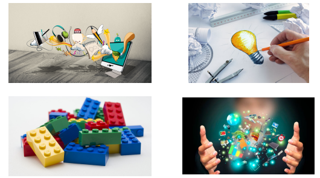
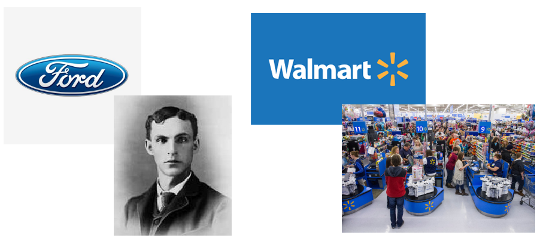
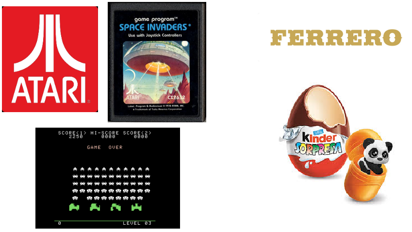

Gracias